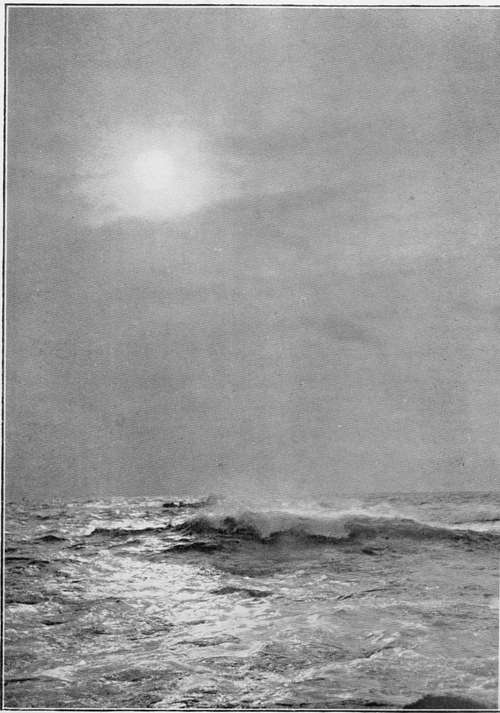

Carbon Printing
Description
This section is from the book "The Barnet Book Of Photography", by Herts Barnet. Also available from Amazon: The Barnet Book Of Photography.
Carbon Printing
CARBON printing being so essentially different in its methods from other processes, the terms used to describe the various operations also differ widely, so that to the ordinary worker it may appear forbiddingly strange and difficult. Strange it is, to an extent, but certainly not difficult to any careful and systematic worker; and as soon as the initial points are mastered, it becomes the most flexible and adaptable, as well as the most fascinating of printing processes, And the initial difficulties are less than in many other printing methods. There is no reason why a first essay in carbon should not result in fair prints if reasonable care is exercised.
The object of this article is mainly to describe the working of the process in detail in such a manner that those unacquainted with it may, from these pages alone, derive all the information that they require to become successful carbon printers, the probable causes of failure or defective results being given, as well as the simple description of the most direct method of ensuring success. In addition, it is hoped that gleanings from the author's experience in working the process may be useful to many who have long passed the preliminary stages of the work, as they are original methods of arriving at the result desired, departures from ordinary practice that have appeared to be improvements when regarded from the point of view of the worker on a small scale.
Carbon is essentially the process for the amateur photographer, as by its aid so much variety in the resulting prints may be secured without any variation in working, or equally, if desired, any number of prints absolutely identical in tone or colour; whether the colour desired be black, brown, red, or even green or blue. And a most important consideration for the worker who wishes his prints to be as close as possible in their approach to the depth and effect that he has determined upon, is that the exact depth can be determined in development in full daylight when there is no further operation to modify the effect that has been produced. There is a fair latitude possible in development, quite sufficient to cover the errors of exposure within the limits of reasonable care in working. And before proceeding to the practical consideration of the work, attention may be called to the fact that carbon differs from all other printing methods in a manner that most workers will appreciate. However the print may have to be treated to compensate for error in exposure or to obtain any special effect by developing one portion more than another, the colour is unaffected. It remains the exact shade determined upon when the sensitive paper was placed in the printing frame.
Carbon tissue, as the paper bearing the gelatine film is called, may be purchased from the makers either sensitive or insensitive. The inexperienced worker should obtain sensitive tissue, though as he becomes more advanced he will certainly prefer to sensitise tissue as required for printing, this course offering so many advantages. But at first it is necessary to reduce the chances of failure to the minimum, and in purchasing sensitive tissue the beginner can ensure that his materials are in a condition that renders the finest result possible. If he should fail, the reason is not in his materials but in his working.
THE MAJESTIC MAIN By F. J. MORTIMER.
Carbon tissue consists simply of a film of coloured gelatine supported on paper, similar in some respects to the film in gelatine silver printing papers; but in place of the sensitive silver salt in the latter, the former is rendered sensitive to light by containing potassium bichromate ; and instead of being white like the silver paper it is very dark, the actual surface appearance being that of the deepest shadow of the final print.
The basis of the carbon process is the fact that gelatine is rendered insoluble by potassium bichromate and subsequent exposure to light. In practice, a sheet of paper is coated with a film of coloured gelatine which has been rendered sensitive to the action of light by the addition of potassium bichromate, and, after exposure under a negative, those parts on which the light has not acted are dissolved away, leaving the image standing. In a description it sounds terribly clumsy and unpromising, in practice it is capable of the most delicate effects and perfect rendering of gradation, combined with the greatest force and vigour, if desired.
As gelatine is colourless, the colour of the print is determined in the manufacture of the tissue by the pigments added to the gelatine, the after treatment, development, etc, having no effect on this colour.
The only difference between sensitive and insensitive tissue is that the former has the sensitising salt incorporated during manufacture ; the latter is exactly similar excepting in this one respect, and it has to be rendered sensitive by immersion in a sensitising bath before using.
Sensitive tissue will not keep in really good condition for more than seven to ten days, insensitive will keep indefinitely if stored in a thoroughly dry room. In a damp atmosphere it will rapidly deteriorate.
The results are permanent. The gelatine film that remains after exposure and development is absolutely insoluble, and manufacturers are careful to select permanent colours for tissue making. With an unfading pigment and thoroughly toughened gelatine, a print is secured as lasting as anything on a paper basis can possibly be.
Continue to:
Tags
paper, print, negative, exposure, lens, development, camera, focus